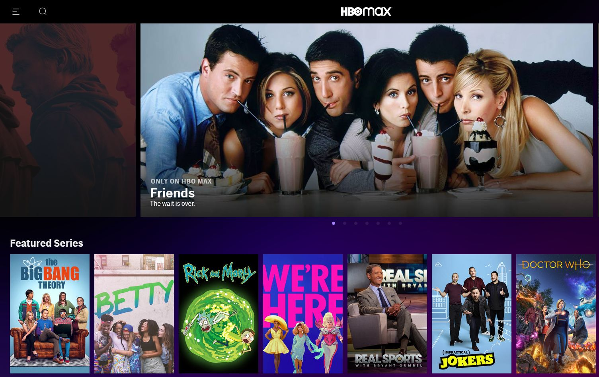

a random mash of stuff i've built or half-built for fun...
sometimes, when i have an idea, i'll spend 24 hours only thinking about it and just end up zoned in, building it till i'm done. most of the time, these aren't researchy things — instead, i'm tinkering around with code or playing around on figma. i'm really hoping to try a physical medium next, something that i can get my hands on, like woodworking, or pottery! so please stay tuned for that (...if i haven't forgotten about this page)
Silicon Valley Through the Years
I took a part-time leave from school Fall Quarter to go intern at HBO Max on the UXR team! It was exciting to work on a product that was in the beginning stages of being built and growing, as there were overwhelming avenues of research to dive into. Over the course of 7 weeks, I worked to support other researchers and led my own research study uncovering content recommendations. This project is largely under NDA, so please contact me for more information!

High School Opportunities in Tech
(Blind) User Interviews, Stakeholder Interviews, Cognitive Walkthrough, Heuristic Evaluation, Literature Review, Miro, UserTesting
Problem Statement
This project is currently in development and under NDA. I'm unable to disclose much of this project, so stay tuned for updates to this page on the process and results. On a high level, I worked with Designers and PMs to undercover this underlying question:
How might we improve movie & series recommendations for users on the platform?

Learnings
I largely led this research on my own, with meetings and check-ins weekly with Susan (my manager) and the rest of the team. Ultimately, I felt that it would be valuable to start tackling research as if I was a full-time researcher now that I was interning as a UX Researcher the second time around.
- Working on a consumer-facing product made the research I was doing incredibly understandable, as I could see and understand from a user perspective firsthand (I've subscribed to HBO Max before). This made the initial stages of research much, much easier for me to tackle.
- This was a small team, which meant that I had the opportunity to be fairly autonomous with my work. And with autonomy meant that I had to be disciplined and strict in keeping myself accountable with getting work done, by making checklists and taking notes to make sure I was still being productive.
- I really got to learn to be comfortable in user interviews — establishing rapport with participants early on, making sure they felt heard, not being hard pressed to follow the script, etc. While before this internship sometimes I was still with some nerves in interview sessions, I felt myself loosen up with more practice.
Many Thanks
To the whole UXR team — Susan, Ayo, Rachel, Amanda, Michael — for giving me this chance to do work here and aiding me in tackling research on my own! Especially thanks to Susan and Ayo for those times of 1-1 mentorship and insight.